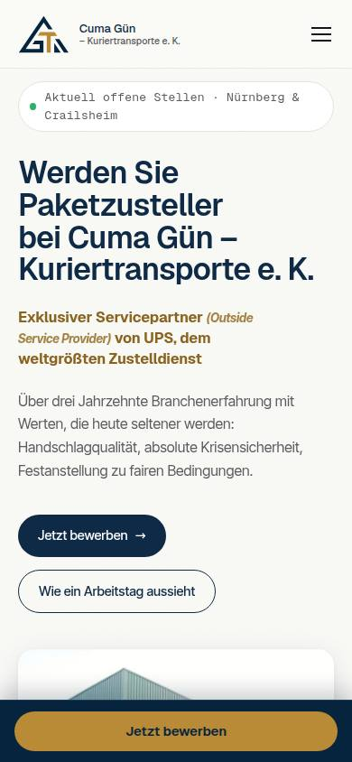

übergeben Kundenprojekt
Cuma Gün – Kuriertransporte e. K.
Offene Stellen an zwei Standorten → jede Bewerbung landet von selbst im richtigen Postfach.
180+ automatische Prüfungen vor der Übergabe
Wie es gemacht ist
Karriereseite einer Kurierfirma aus Nürnberg und Crailsheim
- AufgabeOffene Stellen an zwei Standorten, Nürnberg und Crailsheim.
- GemachtKarriereseite und Bewerbungsformular mit Dateien.
- ErgebnisJede Bewerbung geht von selbst an das Postfach des richtigen Standorts.
- 2Städte, Nürnberg und Crailsheim
- 1 FormularBewerbung mit Dateien direkt an die Mail der richtigen Stadt
- 180+automatische Prüfungen vor der Übergabe
Am 07.10.2026 an den Kunden übergeben · Start auf guen-transporte.de
Was dazukommen kann
- Ich baue die Online-Buchung von Vorstellungsgesprächen
- Ich baue einen Bot, der Bewerbern Standardfragen beantwortet
- Ich baue eine automatische Übersicht aller Bewerbungen

